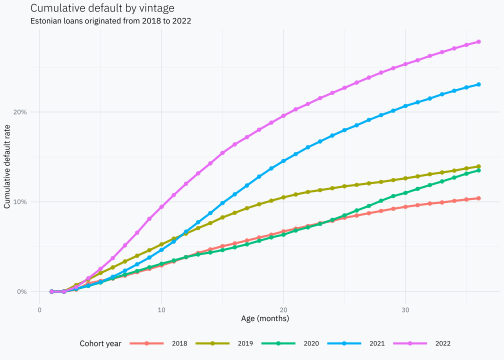
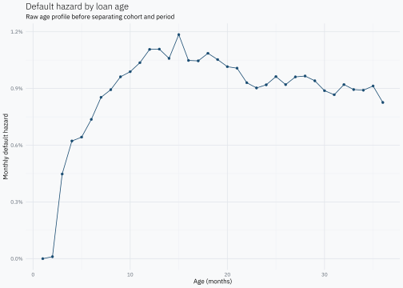
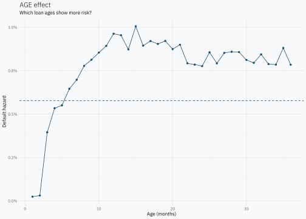
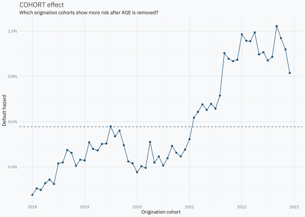
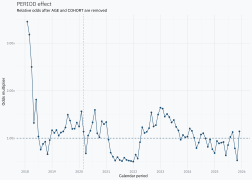

library(dplyr)
library(ggplot2)
library(lubridate)
library(tidyr)
data_url <- "https://sabanners001.blob.core.windows.net/statistics/public/loan_dataset_investor.xlsx"
# Keep the large source file outside the repository and reuse it on later renders.
cache_dir <- tools::R_user_dir("jkunst-blog", which = "cache")
data_file <- file.path(cache_dir, "bondora-loan-dataset.xlsx")
dir.create(cache_dir, recursive = TRUE, showWarnings = FALSE)
if (!file.exists(data_file)) {
download.file(data_url, data_file, mode = "wb")
}Credit vintages are a common way to follow how default changes after loans are originated. The Federal Reserve describes vintage loss models, also called age-cohort-time models, for retail credit portfolios. The Banco de la República of Colombia uses an age-period-cohort decomposition directly on credit vintages to help understand where changes in credit risk come from.
The idea is simple. Every observation in a vintage has three dates attached to it:
- Age: how many months old the loan is.
- Cohort: the month when the loan was originated.
- Period: the calendar month when we observe it.
For monthly data they are linked exactly:
[ = + . ]
We will build the data from the bottom up: one loan, its monthly history, all loans, a long vintage table, a familiar vintage triangle, and finally the APC decomposition.
Public loan data
Go & Grow’s public statistics page links a downloadable Bondora loan dataset. The workbook contains one row per loan and a second sheet with a data dictionary.
We only need six fields from the 31 columns in the loan sheet. The names below come directly from the current public workbook.
needed_columns <- c(
"loan_id",
"country",
"loan_issued_at",
"loan_status",
"is_default",
"months_on_book"
)
# Read row 1 first so we can select only the columns needed from the large workbook.
header <- openxlsx::read.xlsx(
data_file,
sheet = "Loan Dataset",
rows = 1,
colNames = FALSE,
skipEmptyCols = FALSE
) |>
unlist(use.names = FALSE) |>
as.character()
column_index <- match(needed_columns, header)
if (anyNA(column_index)) stop("Missing Bondora fields: ", paste(needed_columns[is.na(column_index)], collapse = ", "))
loans_raw <- openxlsx::read.xlsx(
data_file,
sheet = "Loan Dataset",
cols = column_index,
detectDates = TRUE,
check.names = FALSE
) |>
tibble::as_tibble()
loans_raw# A tibble: 789,144 × 6
loan_id country loan_issued_at loan_status is_default months_on_book
<chr> <chr> <dbl> <chr> <lgl> <dbl>
1 0000B9FA-5598-4… Estonia 43878. Repaid FALSE 12
2 0001463B-E6E2-4… Estonia 44378. Repaid FALSE 6
3 001B7346-9068-4… Finland 44548. Repaid FALSE 13
4 001FD367-56F9-4… Nether… 45808. Active FALSE 13
5 0022E68D-A2EC-4… Estonia 44300. Defaulted TRUE 39
6 0025F025-8142-4… Finland 45773. Defaulted TRUE 13
7 0037E033-1A29-4… Finland 45608. Repaid FALSE 20
8 003E4687-1045-4… Estonia 43699. Repaid FALSE 26
9 0042E25A-4CA2-4… Finland 44825. Repaid FALSE 7
10 00446BAC-7013-4… Estonia 43890. Repaid FALSE 0
# ℹ 789,134 more rowsPrinting the tibble is intentional: it shows the number of rows and columns, the fields we loaded and a few real observations before we transform anything.
The data contains loans from several countries. Before choosing one for the example, look at their sizes.
country_counts <- loans_raw |>
count(country, sort = TRUE)
country_counts# A tibble: 8 × 2
country n
<chr> <int>
1 Finland 427133
2 Estonia 240987
3 Netherlands 66005
4 Spain 34221
5 Latvia 11557
6 Denmark 8888
7 Slovakia 346
8 Lithuania 7For the decomposition we use Estonia. It is not the largest country in the current file, but it has substantial and continuous monthly originations throughout the 2018–2022 window. That makes it a cleaner example than markets with long gaps in origination, while keeping country differences out of the AGE, COHORT and PERIOD effects.
The workbook also explains the fields we use. In particular, months_on_book is the number of months a loan has been in active status.
| Field | Description |
|---|---|
| country | Country of the loan. |
| is_default | Boolean. Flag indicating if the loan is in default. |
| loan_id | Unique identifier of the loan. |
| loan_issued_at | Time when loan was issued. |
| loan_status | Shows the status of the loan on the given date. |
| months_on_book | Months a loan has been in active status. |
For this example we keep Estonian cohorts from 2018 through 2022 and follow at most the first 36 months. Starting before 2020 is useful because the same calendar period can meet different cohorts at very different ages.
country_name <- "Estonia"
cohort_from <- as.Date("2018-01-01")
cohort_to <- as.Date("2022-12-01")
max_age <- 36L
loans <- loans_raw |>
mutate(
# Excel stores this field as a serial date in the current workbook.
loan_date = as.Date(loan_issued_at, origin = "1899-12-30"),
cohort = floor_date(loan_date, unit = "month"),
months_on_book = as.integer(months_on_book),
is_default = as.logical(is_default),
# Use Bondora's MOB convention directly: a defaulted loan defaults at this age.
default_age = if_else(is_default, months_on_book, NA_integer_),
observed_age = pmin(months_on_book, max_age)
) |>
filter(
country == country_name,
cohort >= cohort_from,
cohort <= cohort_to,
observed_age >= 1
) |>
select(
loan_id,
country,
loan_status,
cohort,
months_on_book,
is_default,
default_age,
observed_age
)
loans# A tibble: 116,706 × 8
loan_id country loan_status cohort months_on_book is_default default_age
<chr> <chr> <chr> <date> <int> <lgl> <int>
1 0000B9F… Estonia Repaid 2020-02-01 12 FALSE NA
2 0001463… Estonia Repaid 2021-06-01 6 FALSE NA
3 0022E68… Estonia Defaulted 2021-04-01 39 TRUE 39
4 003E468… Estonia Repaid 2019-08-01 26 FALSE NA
5 0095D19… Estonia Defaulted 2022-04-01 35 TRUE 35
6 0095DE2… Estonia Repaid 2021-09-01 8 FALSE NA
7 00BCA40… Estonia Active 2021-03-01 65 FALSE NA
8 00E8919… Estonia Defaulted 2021-12-01 9 TRUE 9
9 00FB6D3… Estonia Defaulted 2022-04-01 30 TRUE 30
10 00FD82F… Estonia Repaid 2018-06-01 10 FALSE NA
# ℹ 116,696 more rows
# ℹ 1 more variable: observed_age <int>At this point there is still one row per loan. We know its cohort, how many months we observe it, and whether default happened at the end of that observed path.
One loan, month by month
Start with one loan that defaulted around age 6.
# A tibble: 1 × 4
loan_id cohort observed_age default_age
<chr> <date> <int> <int>
1 0239137C-0ABA-4EA7-9EFF-AAF4015CCC92 2019-10-01 6 6uncount() turns that one record into one row per observed month. Age 1 is the first month after origination. The default flag is one only in the month when the default first appears.
# A tibble: 6 × 5
loan_id cohort age period default
<chr> <date> <int> <date> <int>
1 0239137C-0ABA-4EA7-9EFF-AAF4015CCC92 2019-10-01 1 2019-11-01 0
2 0239137C-0ABA-4EA7-9EFF-AAF4015CCC92 2019-10-01 2 2019-12-01 0
3 0239137C-0ABA-4EA7-9EFF-AAF4015CCC92 2019-10-01 3 2020-01-01 0
4 0239137C-0ABA-4EA7-9EFF-AAF4015CCC92 2019-10-01 4 2020-02-01 0
5 0239137C-0ABA-4EA7-9EFF-AAF4015CCC92 2019-10-01 5 2020-03-01 0
6 0239137C-0ABA-4EA7-9EFF-AAF4015CCC92 2019-10-01 6 2020-04-01 1A loan defaulting at age 6 appears in six monthly rows but contributes exactly one new default: at age 6. We do not create rows after that default.
The same idea for more loans
Now put the same logic in a small function.
expand_loan <- function(loan_id, cohort, observed_age, default_age) {
tibble::tibble(
loan_id = loan_id,
cohort = cohort,
age = seq_len(as.integer(observed_age))
) |>
mutate(
period = cohort %m+% months(age),
default = as.integer(!is.na(default_age) & age == default_age)
)
}pmap() makes the row-by-row idea explicit. Here we use only three loans so the result stays small enough to inspect.
three_loans <- loans |>
slice_head(n = 3) |>
select(loan_id, cohort, observed_age, default_age)
three_loan_months <- three_loans |>
purrr::pmap(expand_loan) |>
purrr::list_rbind()
three_loan_months# A tibble: 54 × 5
loan_id cohort age period default
<chr> <date> <int> <date> <int>
1 0000B9FA-5598-4130-9143-AB63012DC8D8 2020-02-01 1 2020-03-01 0
2 0000B9FA-5598-4130-9143-AB63012DC8D8 2020-02-01 2 2020-04-01 0
3 0000B9FA-5598-4130-9143-AB63012DC8D8 2020-02-01 3 2020-05-01 0
4 0000B9FA-5598-4130-9143-AB63012DC8D8 2020-02-01 4 2020-06-01 0
5 0000B9FA-5598-4130-9143-AB63012DC8D8 2020-02-01 5 2020-07-01 0
6 0000B9FA-5598-4130-9143-AB63012DC8D8 2020-02-01 6 2020-08-01 0
7 0000B9FA-5598-4130-9143-AB63012DC8D8 2020-02-01 7 2020-09-01 0
8 0000B9FA-5598-4130-9143-AB63012DC8D8 2020-02-01 8 2020-10-01 0
9 0000B9FA-5598-4130-9143-AB63012DC8D8 2020-02-01 9 2020-11-01 0
10 0000B9FA-5598-4130-9143-AB63012DC8D8 2020-02-01 10 2020-12-01 0
# ℹ 44 more rowsFor the full portfolio we do not need to build thousands of tiny tibbles. The same operation can be written directly with uncount(), which is simpler and faster.
# A tibble: 2,588,883 × 5
loan_id cohort age period default
<chr> <date> <int> <date> <int>
1 0000B9FA-5598-4130-9143-AB63012DC8D8 2020-02-01 1 2020-03-01 0
2 0000B9FA-5598-4130-9143-AB63012DC8D8 2020-02-01 2 2020-04-01 0
3 0000B9FA-5598-4130-9143-AB63012DC8D8 2020-02-01 3 2020-05-01 0
4 0000B9FA-5598-4130-9143-AB63012DC8D8 2020-02-01 4 2020-06-01 0
5 0000B9FA-5598-4130-9143-AB63012DC8D8 2020-02-01 5 2020-07-01 0
6 0000B9FA-5598-4130-9143-AB63012DC8D8 2020-02-01 6 2020-08-01 0
7 0000B9FA-5598-4130-9143-AB63012DC8D8 2020-02-01 7 2020-09-01 0
8 0000B9FA-5598-4130-9143-AB63012DC8D8 2020-02-01 8 2020-10-01 0
9 0000B9FA-5598-4130-9143-AB63012DC8D8 2020-02-01 9 2020-11-01 0
10 0000B9FA-5598-4130-9143-AB63012DC8D8 2020-02-01 10 2020-12-01 0
# ℹ 2,588,873 more rowsWe have moved from one row per loan to:
loan_id × cohort × age × period × default.
From monthly records to vintage hazards
Now group those rows by cohort, age and period. For each combination we count how many loans reached the month and how many new defaults happened there.
# A tibble: 2,160 × 6
cohort age period exposure defaults hazard
<date> <int> <date> <int> <int> <dbl>
1 2018-01-01 1 2018-02-01 1231 0 0
2 2018-01-01 2 2018-03-01 1217 0 0
3 2018-01-01 3 2018-04-01 1202 3 0.00250
4 2018-01-01 4 2018-05-01 1165 3 0.00258
5 2018-01-01 5 2018-06-01 1104 3 0.00272
6 2018-01-01 6 2018-07-01 1060 1 0.000943
7 2018-01-01 7 2018-08-01 1009 0 0
8 2018-01-01 8 2018-09-01 960 1 0.00104
9 2018-01-01 9 2018-10-01 926 1 0.00108
10 2018-01-01 10 2018-11-01 902 1 0.00111
# ℹ 2,150 more rowsFor each row:
[ = {}. ]
So the hazard is simply the monthly default rate among loans that reached that month without defaulting before. It is not an accumulated default rate.
Each row now has three identities at once. A hazard can be high because of the age of the loans, because that cohort is different, because something happened in that calendar period, or because of a mixture of those things.
The familiar vintage triangle
The same long table can be displayed with cohort down the rows and age across the columns. Here we take twelve cohorts around 2020 and their first twelve months.
triangle_cohorts <- seq.Date(
as.Date("2019-06-01"),
as.Date("2020-05-01"),
by = "month"
)
vintage_triangle <- vintage_long |>
filter(
cohort %in% triangle_cohorts,
age <= 12
) |>
select(cohort, age, hazard) |>
mutate(
cohort = format(cohort, "%Y-%m"),
hazard = scales::percent(hazard, accuracy = 0.01)
) |>
pivot_wider(
names_from = age,
names_prefix = "M",
values_from = hazard
) |>
arrange(cohort)
vintage_triangle# A tibble: 12 × 13
cohort M1 M2 M3 M4 M5 M6 M7 M8 M9 M10 M11
<chr> <chr> <chr> <chr> <chr> <chr> <chr> <chr> <chr> <chr> <chr> <chr>
1 2019-06 0.00% 0.05% 1.03% 0.62% 0.93% 0.92% 0.70% 0.91% 0.41% 0.42% 1.06%
2 2019-07 0.00% 0.09% 0.91% 0.42% 1.07% 0.56% 1.32% 0.60% 0.85% 0.75% 1.24%
3 2019-08 0.00% 0.12% 1.08% 0.70% 0.81% 0.89% 0.78% 0.60% 0.87% 1.10% 0.60%
4 2019-09 0.00% 0.04% 1.09% 0.64% 1.51% 0.49% 0.45% 0.87% 0.95% 1.47% 1.36%
5 2019-10 0.00% 0.00% 0.87% 0.77% 0.86% 0.61% 0.80% 0.96% 0.92% 1.03% 0.99%
6 2019-11 0.00% 0.03% 0.83% 0.24% 0.17% 0.81% 0.72% 0.75% 0.93% 0.80% 0.66%
7 2019-12 0.00% 0.07% 0.70% 0.18% 0.36% 0.77% 0.87% 0.78% 0.73% 0.34% 0.82%
8 2020-01 0.00% 0.04% 0.16% 0.29% 0.38% 0.64% 1.01% 0.50% 0.42% 0.63% 0.84%
9 2020-02 0.00% 0.00% 0.19% 0.20% 0.41% 0.94% 0.65% 0.50% 0.92% 0.72% 0.55%
10 2020-03 0.00% 0.00% 0.21% 0.64% 0.65% 0.56% 0.69% 0.54% 0.55% 0.89% 0.46%
11 2020-04 0.00% 0.00% 0.44% 0.38% 0.47% 0.57% 0.84% 0.61% 0.63% 0.46% 1.05%
12 2020-05 0.00% 0.00% 0.49% 0.67% 0.43% 0.53% 0.36% 0.47% 0.39% 0.40% 0.31%
# ℹ 1 more variable: M12 <chr>The triangle is only another view of vintage_long; it is not a different data source. A calendar month cuts across the triangle diagonally because different cohorts reach the same period at different ages.
For example, look at April 2020 directly in the long table:
# A tibble: 27 × 6
cohort age period exposure defaults hazard
<date> <int> <date> <int> <int> <dbl>
1 2018-01-01 27 2020-04-01 510 2 0.00392
2 2018-02-01 26 2020-04-01 453 0 0
3 2018-03-01 25 2020-04-01 514 4 0.00778
4 2018-04-01 24 2020-04-01 589 0 0
5 2018-05-01 23 2020-04-01 620 2 0.00323
6 2018-06-01 22 2020-04-01 677 0 0
7 2018-07-01 21 2020-04-01 658 1 0.00152
8 2018-08-01 20 2020-04-01 786 2 0.00254
9 2018-09-01 19 2020-04-01 749 1 0.00134
10 2018-10-01 18 2020-04-01 1058 5 0.00473
# ℹ 17 more rowsIt is the same period, but the 2018 loans are much older than the 2019 loans, and the early-2020 loans are only a few months old. A raw vintage view cannot tell us whether a difference comes from age, cohort or the common calendar period.
That is why including pre-2020 cohorts is useful here. If the PERIOD component later changes around 2020, it is a pattern worth inspecting. The decomposition by itself does not prove that COVID caused the change.
Cumulative default by cohort
Before decomposing anything, look at a classic vintage view: cumulative default as loans get older. For a cleaner overview, we pool the twelve monthly cohorts into origination years from 2018 to 2022.
annual_vintages <- loan_months |>
mutate(cohort_year = year(cohort)) |>
summarise(
exposure = n(),
defaults = sum(default),
.by = c(cohort_year, age)
) |>
arrange(cohort_year, age) |>
group_by(cohort_year) |>
mutate(
initial_loans = first(exposure),
cumulative_defaults = cumsum(defaults),
cumulative_default_rate = cumulative_defaults / initial_loans
) |>
ungroup()
p_vintages <- annual_vintages |>
mutate(cohort_year = factor(cohort_year)) |>
ggplot(aes(age, cumulative_default_rate, colour = cohort_year, group = cohort_year)) +
geom_line(linewidth = 1) +
geom_point(size = 1.5) +
scale_y_continuous(labels = scales::label_percent(accuracy = 1)) +
labs(
title = "Cumulative default by vintage",
subtitle = "Estonian loans originated from 2018 to 2022",
x = "Age (months)",
y = "Cumulative default rate",
colour = "Cohort year"
)
p_vintages
Different lines can have different shapes for many reasons. The loans were originated in different years, they reached each age in different calendar periods, and they passed through events such as 2020 at different points in their life. That is exactly the mixture we want to separate.
The yearly grouping above is only for a cleaner descriptive chart. The APC decomposition below still uses the original monthly cohorts in vintage_long. This raw vintage chart is also a natural candidate for the post preview.
Raw age profile
We can also ignore cohort and period for a moment and group only by age.
# A tibble: 36 × 4
age exposure defaults hazard
<int> <int> <int> <dbl>
1 1 116706 0 0
2 2 114857 12 0.000104
3 3 112826 505 0.00448
4 4 109921 684 0.00622
5 5 106413 684 0.00643
6 6 103053 759 0.00737
7 7 99728 851 0.00853
8 8 96464 862 0.00894
9 9 93057 895 0.00962
10 10 89907 889 0.00989
# ℹ 26 more rowsggplot(age_hazard, aes(age, hazard)) +
geom_line() +
geom_point() +
scale_y_continuous(labels = scales::label_percent(accuracy = 0.1)) +
labs(
title = "Default hazard by loan age",
subtitle = "Raw age profile before separating cohort and period",
x = "Age (months)",
y = "Monthly default hazard"
)
This curve is useful, but it still mixes the three parts. Age 12 for a 2018 cohort happened in a different period from age 12 for a 2020 cohort.
Sequential APC decomposition
We now return to vintage_long. The triangle and cumulative curves were only for looking at the data; the decomposition uses the complete long table.
Some cohort-age-period rows have no defaults. Their raw hazard is exactly zero, and logit(0) is not finite. To avoid that, use a small add-half correction: add half a default and half a non-default to every row.
[ q = . ]
The 0.5 in the numerator is the half default. The denominator increases by 1 because we added 0.5 to each of the two outcomes: default and no default. In large rows the change is tiny; its purpose is to keep the logit finite.
We then split the logit of that adjusted rate into a mean plus AGE, COHORT and PERIOD effects:
[ y + AGE + COHORT + PERIOD. ]
The simple version used here does that in order. First AGE is estimated, then COHORT from what remains, and finally PERIOD from what remains after both. Exposure is used as the weight throughout.
pseudo_count <- 0.5
apc_cells <- vintage_long |>
mutate(
q = (defaults + pseudo_count) / (exposure + 2 * pseudo_count),
y_logit = qlogis(q)
)
mu <- weighted.mean(apc_cells$y_logit, apc_cells$exposure)
age_effects <- apc_cells |>
mutate(residual = y_logit - mu) |>
summarise(
effect = weighted.mean(residual, exposure),
weight = sum(exposure),
.by = age
) |>
mutate(effect = effect - weighted.mean(effect, weight))
cells_after_age <- apc_cells |>
left_join(
age_effects |>
select(age, age_effect = effect),
by = "age"
)
cohort_effects <- cells_after_age |>
mutate(residual = y_logit - mu - age_effect) |>
summarise(
effect = weighted.mean(residual, exposure),
weight = sum(exposure),
.by = cohort
) |>
mutate(effect = effect - weighted.mean(effect, weight))
cells_after_cohort <- cells_after_age |>
left_join(
cohort_effects |>
select(cohort, cohort_effect = effect),
by = "cohort"
)
period_effects <- cells_after_cohort |>
mutate(residual = y_logit - mu - age_effect - cohort_effect) |>
summarise(
effect = weighted.mean(residual, exposure),
weight = sum(exposure),
.by = period
) |>
mutate(effect = effect - weighted.mean(effect, weight))
apc_decomposition <- cells_after_cohort |>
left_join(
period_effects |>
select(period, period_effect = effect),
by = "period"
) |>
mutate(
mean_effect = mu,
fitted_logit = mean_effect + age_effect + cohort_effect + period_effect,
residual = y_logit - fitted_logit,
fitted_hazard = plogis(fitted_logit),
reconstructed_logit = fitted_logit + residual,
reconstructed_q = plogis(reconstructed_logit)
) |>
select(
cohort,
age,
period,
exposure,
defaults,
q,
y_logit,
mean_effect,
age_effect,
cohort_effect,
period_effect,
residual,
fitted_hazard,
reconstructed_q
)
apc_decomposition# A tibble: 2,160 × 14
cohort age period exposure defaults q y_logit mean_effect
<date> <int> <date> <int> <int> <dbl> <dbl> <dbl>
1 2018-01-01 1 2018-02-01 1231 0 0.000406 -7.81 -5.15
2 2018-01-01 2 2018-03-01 1217 0 0.000411 -7.80 -5.15
3 2018-01-01 3 2018-04-01 1202 3 0.00291 -5.84 -5.15
4 2018-01-01 4 2018-05-01 1165 3 0.00300 -5.81 -5.15
5 2018-01-01 5 2018-06-01 1104 3 0.00317 -5.75 -5.15
6 2018-01-01 6 2018-07-01 1060 1 0.00141 -6.56 -5.15
7 2018-01-01 7 2018-08-01 1009 0 0.000495 -7.61 -5.15
8 2018-01-01 8 2018-09-01 960 1 0.00156 -6.46 -5.15
9 2018-01-01 9 2018-10-01 926 1 0.00162 -6.42 -5.15
10 2018-01-01 10 2018-11-01 902 1 0.00166 -6.40 -5.15
# ℹ 2,150 more rows
# ℹ 6 more variables: age_effect <dbl>, cohort_effect <dbl>,
# period_effect <dbl>, residual <dbl>, fitted_hazard <dbl>,
# reconstructed_q <dbl>There is a residual. The three effects explain the systematic part allocated by this sequential procedure, while each row can still differ from that fitted value. The exact row-level identity is:
[ y = + AGE + COHORT + PERIOD + residual. ]
The table above lets us see every piece together. We can also check the sum directly on a few rows:
apc_decomposition |>
mutate(
component_sum = mean_effect + age_effect + cohort_effect + period_effect + residual,
difference = y_logit - component_sum
) |>
select(
cohort,
age,
period,
y_logit,
mean_effect,
age_effect,
cohort_effect,
period_effect,
residual,
component_sum,
difference
) |>
slice_head(n = 10)# A tibble: 10 × 11
cohort age period y_logit mean_effect age_effect cohort_effect
<date> <int> <date> <dbl> <dbl> <dbl> <dbl>
1 2018-01-01 1 2018-02-01 -7.81 -5.15 -3.16 -0.740
2 2018-01-01 2 2018-03-01 -7.80 -5.15 -2.92 -0.740
3 2018-01-01 3 2018-04-01 -5.84 -5.15 -0.381 -0.740
4 2018-01-01 4 2018-05-01 -5.81 -5.15 -0.0790 -0.740
5 2018-01-01 5 2018-06-01 -5.75 -5.15 -0.0483 -0.740
6 2018-01-01 6 2018-07-01 -6.56 -5.15 0.112 -0.740
7 2018-01-01 7 2018-08-01 -7.61 -5.15 0.190 -0.740
8 2018-01-01 8 2018-09-01 -6.46 -5.15 0.299 -0.740
9 2018-01-01 9 2018-10-01 -6.42 -5.15 0.344 -0.740
10 2018-01-01 10 2018-11-01 -6.40 -5.15 0.394 -0.740
# ℹ 4 more variables: period_effect <dbl>, residual <dbl>, component_sum <dbl>,
# difference <dbl>difference should be zero apart from numerical precision. On the probability scale, adding the residual back also recovers q.
# A tibble: 1 × 1
max_rate_difference
<dbl>
1 1.04e-17The result tables are one-dimensional: one AGE effect for every month of age, one COHORT effect for every origination month, and one PERIOD effect for every calendar month. The plots below put each effect back on a hazard scale. The dashed line is the overall baseline.
baseline_hazard <- plogis(mu)
ggplot(age_effects, aes(age, plogis(mu + effect))) +
geom_hline(yintercept = baseline_hazard, linetype = "dashed") +
geom_line() +
geom_point() +
scale_y_continuous(labels = scales::label_percent(accuracy = 0.1)) +
labs(
title = "AGE effect",
subtitle = "Which loan ages show more risk?",
x = "Age (months)",
y = "Default hazard"
)
ggplot(cohort_effects, aes(cohort, plogis(mu + effect))) +
geom_hline(yintercept = baseline_hazard, linetype = "dashed") +
geom_line() +
geom_point() +
scale_x_date(date_breaks = "1 year", date_labels = "%Y") +
scale_y_continuous(labels = scales::label_percent(accuracy = 0.1)) +
labs(
title = "COHORT effect",
subtitle = "Which origination cohorts show more risk after AGE is removed?",
x = "Origination cohort",
y = "Default hazard"
)
ggplot(period_effects, aes(period, plogis(mu + effect))) +
geom_hline(yintercept = baseline_hazard, linetype = "dashed") +
geom_vline(xintercept = as.Date("2020-03-01"), linetype = "dotted") +
geom_line() +
geom_point() +
scale_x_date(date_breaks = "1 year", date_labels = "%Y") +
scale_y_continuous(labels = scales::label_percent(accuracy = 0.1)) +
labs(
title = "PERIOD effect",
subtitle = "The dotted line marks March 2020",
x = "Calendar period",
y = "Default hazard"
)
The interpretation is direct. A peak in AGE points to ages where default is more likely. A peak in COHORT points to origination months that look riskier. A peak in PERIOD points to calendar months where the loans observed at that time look riskier.
One important caveat
This post uses a sequential decomposition because it is easy to see step by step. But AGE, COHORT and PERIOD are linked by period = cohort + age, so there is no unique way to separate all three without making an additional choice. Here the choice is the order: AGE first, then COHORT, then PERIOD.
That is why these plots should be read as one transparent way of dividing the observed vintage risk, not as the only possible decomposition. A later comparison can use a simultaneous APC method and check whether the same risky ages, cohorts and periods appear.
References
Federal Reserve Board (2013), Capital Planning at Large Bank Holding Companies: vintage loss models, also called age-cohort-time models, for retail credit portfolios.
Banco de la República (2024), Decomposition of the Performance of Credit Vintages: an age-period-cohort application to credit vintages in its Financial Stability Report.